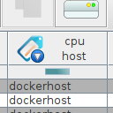

April 2022
Trajektorien in Vektorfeldern
28.04.2022

Manchmal dauert es ein wenig länger von der Inspiration bis zur Umsetzung
Gnuplot Snippets Projekt
28.04.2022
Nachdem ich hin und wieder über verschiede Aspekte von Gnuplot berichtet habe, habe ich mich entschieden, diese über die Jahre gewonnenen Erkenntnisse zu systematisieren und endlich mal davon wegzukommen, immer das letzte Gnuplot Skript zu kopieren und anzupassen.
Programmierung Linkdump 2022 I
19.04.2022

Eine Linksammlung zu Programmierthemen
OsterProjekt 2022 - Tesseract OCR: Ergebnisse
19.04.2022

Der Osterurlaub 2022 ist um - Zeit, die Ergebnisse meines Projektes für diese Zeit vorzustellen:
Neues Plugin DataModel2JPA
13.04.2022

Nach längerer Pause wird nun ein weiteres neues Plugin für die sQLshell veröffentlicht. Ich beschäftigte mich mit JPA und suchte nach einer Methode, Entities für ein bestehendes Schema zu erzeugen.
OsterProjekt 2022 - Tesseract OCR
13.04.2022

Nachdem ich schon eine ganze Weile auf dieser Idee saß, habe ich mich entschlossen, sie als Projekt in meiner Woche Osterurlaub in Angriff zu nehmen - als Ausgleich zwischen den diversen Arbeiten zur Inbetriebnahme meiner neuen Küche...
Elektronik Linkdump 2022 I
13.04.2022
Ein weiterer Linkdump zum Thema Elektronik und Basteln, DIY,...
Writefreely im Docker-Zoo angekommen
13.04.2022

Ich habe wieder einen neuen Container in meinen Docker-Zoo integriert...
M-zu-N-Beziehungen und JPA
05.04.2022
Ich habe bereits darüber berichtet, dass die sQLshell ein neues Plugin anbietet, das aus bestehenden Datenmodellen in Datenbanken JPA-Entityklassen generieren kann.
Verbesserung der GridView-Komponente für Datenbankanwendungen
02.04.2022

Ich hatte bereits verschiedentlich über die Versuche geschrieben, die GUI- und Interaktionsmetaphern zur Arbeit mit relationalen Datenbanken, die zum Beispiel in der sQLshell zum Einsatz kamen auch auf Zeitreihendatenbanken auzuwenden.
Ältere Artikel
Hier geht es zum Archiv der Artikel, die vor dem 02.04.2022 verfasst wurden:
- VC2HTML-Plugin
- Neue Navigationsmöglichkeiten in Plugins zur Dokumentation von Datenmodellen
- ...


Tags
Oktober 2022 September 2022 August 2022 Juli 2022 Juni 2022 Mai 2022 April 2022 März 2022 Februar 2022 Januar 2022 Dezember 2021 November 2021 Oktober 2021 September 2021 August 2021 Juli 2021 Juni 2021 Mai 2021 April 2021 März 2021 Februar 2021 Januar 2021 Dezember 2020 November 2020 bis zum Oktober 2020 Upcoming...
Manche nennen es Blog, manche Web-Seite - ich schreibe hier hin und wieder über meine Erlebnisse, Rückschläge und Erleuchtungen bei meinen Hobbies.
Wer daran teilhaben und eventuell sogar davon profitieren möchte, muß damit leben, daß ich hin und wieder kleine Ausflüge in Bereiche mache, die nichts mit IT, Administration oder Softwareentwicklung zu tun haben.
Ich wünsche allen Lesern viel Spaß und hin und wieder einen kleinen AHA!-Effekt...
PS: Meine öffentlichen GitHub-Repositories findet man hier.